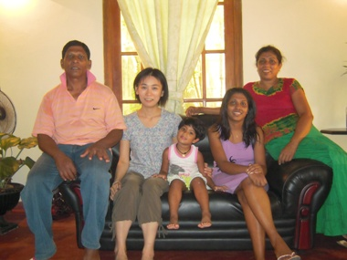
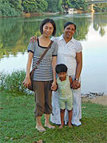

「ホームページプログラムについての多くの情報を得ることが可能で安心できたから参加を決めました。
特に不安などはありませんでした。
レッスンでは、担当の先生から『どうしたら英語で会話が続くようになるか』今後の勉強のアドバイスいただきました。
レッスンは、１週間という短いステイでしたので、時間があまり取れず、最後は消化に追われる感じになりましたが、満足しています。
現地では送迎はもちろんのこと、ホームステイ期間中も電話で困ったことはないか等、気を配っていただいて、大変感謝しています。
逢坂さんからはメールで丁寧、迅速な対応をしていただいて大変助かりました。
本当にいろいろとお世話になりました。
貴重な経験が出来て感謝しています。
ありがとうございました。」
